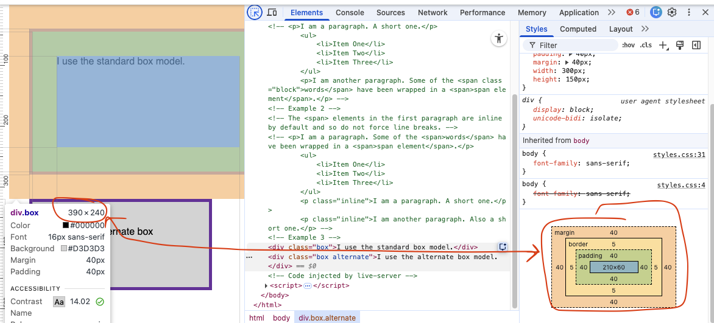
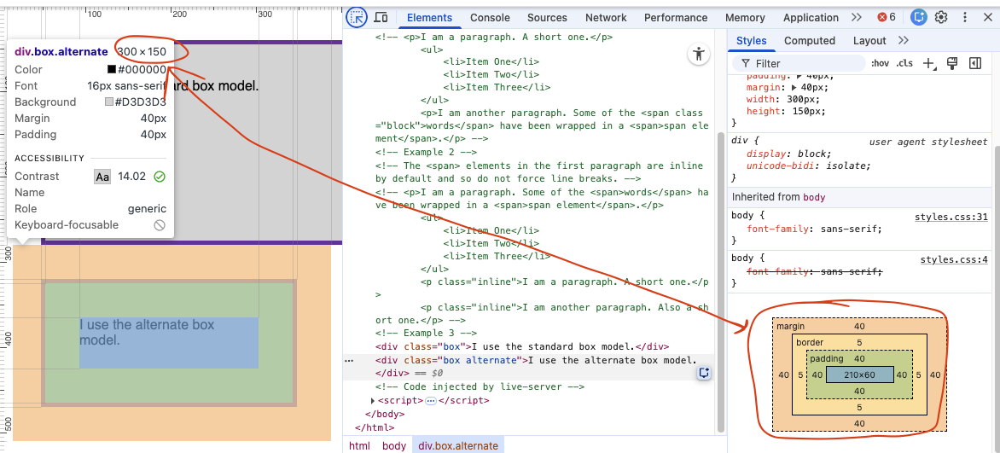
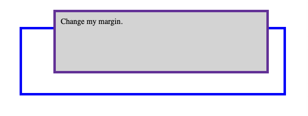

<!DOCTYPE html>
<html lang="en">
    <head>
        <meta charset="UTF-8">
        <title>MDN - The box model</title>
        <link rel="stylesheet" href="./styles.css">
    </head>
    <body>
        <!-- Reference for examples: https://developer.mozilla.org/en-US/docs/Learn_web_development/Core/Styling_basics/Box_model -->

        <!-- UNCOMMENT EXAMPLES TO SEE SPECIFIC EXAMPLE IN ACTION -->

        <!-- Example 1 -->
        <!-- <p>I am a paragraph. A short one.</p>
        <ul>
            <li>Item One</li>
            <li>Item Two</li>
            <li>Item Three</li>
        </ul>
        <p>I am another paragraph. Some of the <span class="block">words</span> have been wrapped in a <span>span element</span>.</p> -->


        <!-- Example 2 -->
         <!-- The <span> elements in the first paragraph are inline by default and so do not force line breaks. -->

        <!-- <p>I am a paragraph. Some of the <span>words</span> have been wrapped in a <span>span element</span>.</p>
        <ul>
            <li>Item One</li>
            <li>Item Two</li>
            <li>Item Three</li>
        </ul>
        <p class="inline">I am a paragraph. A short one.</p>
        <p class="inline">I am another paragraph. Also a short one.</p> -->


        <!-- Example 3 -->
        <!-- <div class="box">I use the standard box model.</div>
        <div class="box alternate">I use the alternate box model.</div>
        <h1>Sizing without box sizing being border box</h1>
        
        <h1>Sizing with box sizing being border box</h1>
         -->


        <!-- Example 4 -->
        <!-- <h1>Before</h1>
        

        <h1>After</h1>
        <div class="container">
            <div class="box">Change my margin.</div>
        </div>
         -->


    </body>
</html>